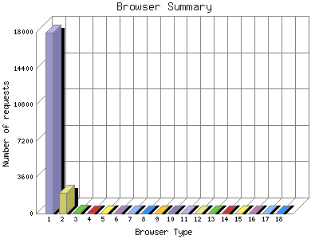

The Browser Summary identifies the most popular web browsers used to visit
this site.
Browsers are broken down by recognized categories such as
Netscape Navigator/Communicator, Microsoft Internet Explorer, WebTV, Opera
and the like. Within each category is also a subgroup by version number
such as 'MSIE 5.0' or 'Netscape 4.5'.
This report shows the first 20 results by number of requests. This report is sorted by number of requests.

| Browser Type | Number of requests | |
|---|---|---|
| 1. | MSIE | 17,948 |
| 2. | Mozilla | 2,027 |
| 3. | Opera | 105 |
| 4. | Netscape (compatible) | 37 |
| 5. | LocalcomBot | 12 |
| 6. | psbot | 11 |
| 7. | Microsoft Data Access Internet Publishing Provider Protocol Discovery | 6 |
| 8. | Microsoft Office Protocol Discovery | 2 |
| 9. | W3C_Validator | 2 |
| 10. | SurveyBot | 2 |
| 11. | msnbot | 2 |
| 12. | Konqueror | 1 |
| 13. | Jakarta Commons-HttpClient | 1 |
| 14. | NutchCVS | 1 |
| 15. | CFNetwork | 1 |
| 16. | Snapbot | 1 |
| 17. | PHP version tracker (http: | 1 |
| 18. | ia_archiver | 1 |
This report was generated on July 19, 2006 03:35.
Report time frame July 12, 2006 05:31 to July 18, 2006 23:50.
| Web statistics report produced by: | |
| analog 5.1 | Report Magic for Analog 2.10 |